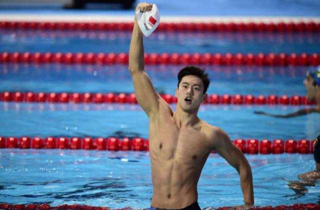
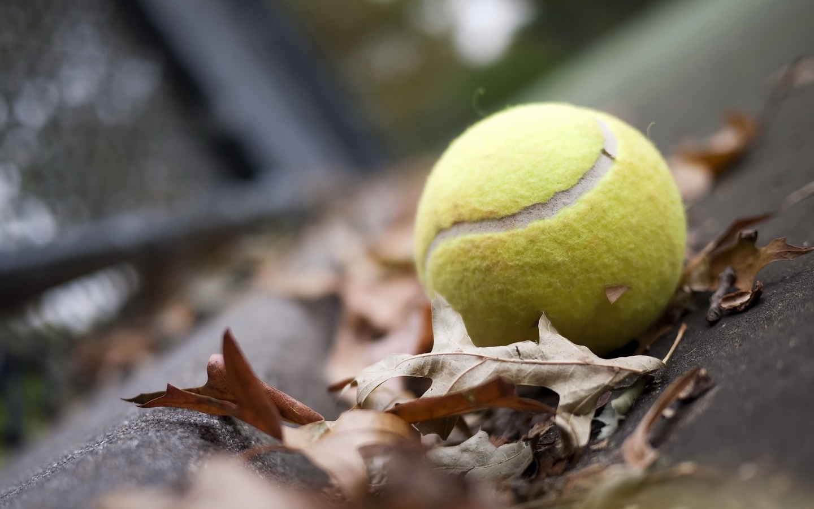
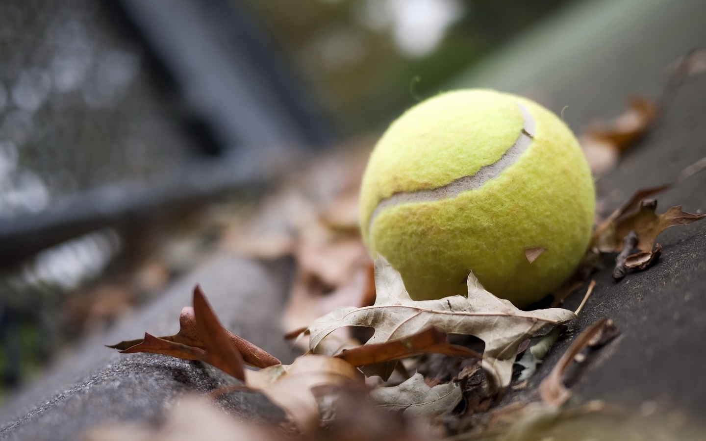

关于游泳、网球
时间：2016.9.17
作者：吴泽发


大一时，学校蛙泳是必修课，从一开始的旱鸭子，到后来慢慢熟悉水性，再到最后学会，不知道喝了多少泳池的水，那酸爽，至今还记得，不过还好学会了蛙泳。
刚开始只能简单地游50米，到后来换气越来越熟练，动作也越来越连贯，能轻松地游200米，再到后来游1000米。大二时，选修选了自由泳，后来，又自学仰泳，希望在大学结束之前能把蝶泳也学会，哈哈，来一次4*100米混合泳。
游泳馆也成为了我周末空闲时间必去的场所，从游泳中，总会让我感到额外地轻松、惬意，喜欢这种感觉~（要是有个沙滩就再好不过了o(^▽^)o）

大二下，开始接触了网球，一接触仿佛就上瘾了，每次上完课后，课余时间自己还会去加练，最后也已各项满分顺利通过了选修课程。
在之后，只要有时间，总会约上小伙伴来练练球，喜欢那种回合制来返地击打，享受在球场上来回奔跑，还有那种高难度的接球总是会让我很激动。
我享受体育锻炼，我也相信有更多的人会投入其中，享受运动带了的乐趣，生命不息，运动不止！